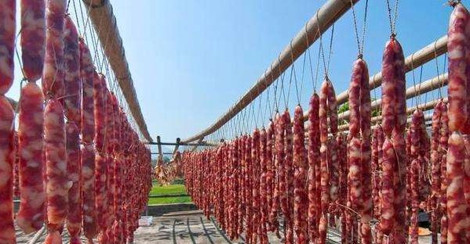
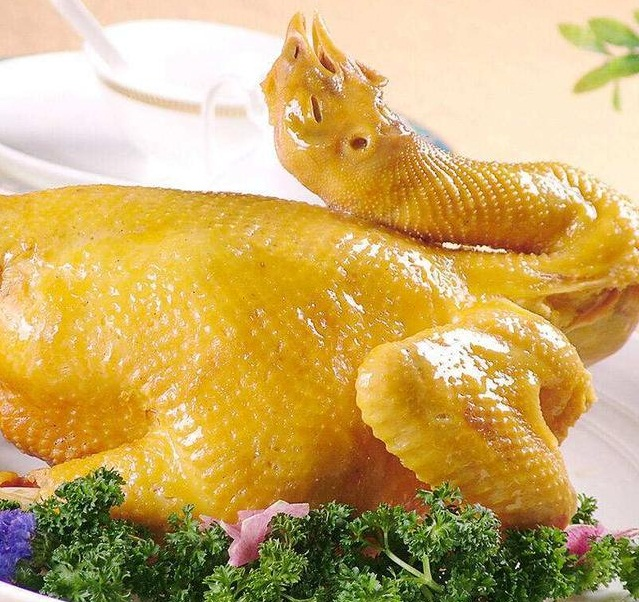
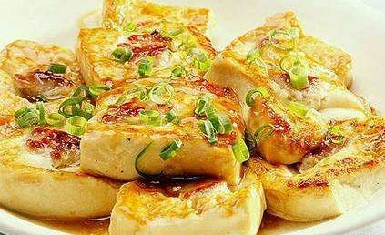
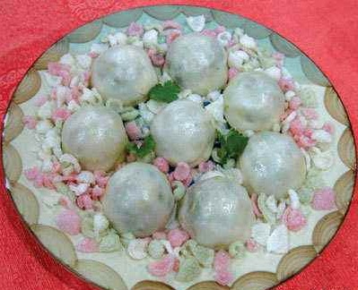
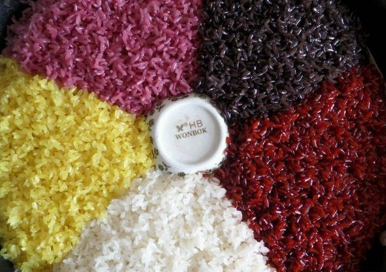
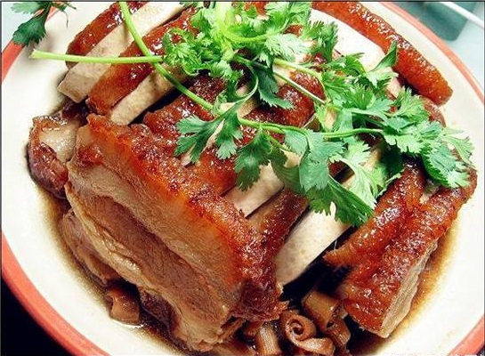

东坡腊味
东陂的腊味，闻名粤港地区和东南亚诸国，当地人常引以自豪。东陂人心灵手巧，东陂的腊味不仅品种繁多，而且制作奇特，以下小录几款。腊蛋：蛋也能腊吗？是的，腊蛋是有名的东陂腊味之一。早在20世纪30年代，东陂镇“遂昌号”的腊蛋、腊狗和风肠，就远销马来西亚、菲律宾诸国和港澳地区了。是花油（猪网油）和蛋，花油为皮，蛋为馅。
清远鸡
清远麻鸡俗称清远鸡，被列入《中国家禽品种志》27个优质品种之一，因母鸡背羽面点缀着无数芝麻样斑点而得名。因地域、饲养方法(完全放养在竹林中喝露水吃小虫的)等原因显得肉嫩、细滑而自古有名；素以皮色金黄、肉质嫩滑、皮爽、骨软、肉鲜红味美、风味独特而驰名省港澳市场。深受广大食家喜爱。1972年美国尼克松总统访华，-总理遍选国内名鸡招待尼克松，最终选中清远鸡，中日邦交的使者田中角荣首相访华也慕名指定品尝清远鸡。
九龙豆腐
九龙豆腐是九龙镇特产，以当地特有山水磨豆制成，吃来口感嫩滑、豆香盈口，在英德人人皆知。吃九龙豆腐一定要到九龙镇，那才是正宗。要做真正的九龙豆腐，其实并不需要什么秘诀。全靠当地的水质好。
腊蛋
蛋也能腊吗？是的，腊蛋是有名的东陂腊味之一。早在20世纪30年代，东陂镇“遂昌号”的腊蛋、腊狗和风肠，就远销马来西亚、菲律宾诸国和港澳地区了。腊蛋的主要原料是花油（猪网油）和蛋，花油为皮，蛋为馅。
五色糯米饭
五色糯米饭又叫花米饭或青精米饭，是壮族人民喜爱的食品之一。它是用糯米泡在枫叶汁、紫蓝草汁（壮语叫“棵斩”）、红草汁（壮语叫“棵些”）、黄花汁（壮语叫“花迈 ”）里分别染成黑色、紫色、红色、黄色，加上本色（即白色）蒸制而成。五色糯米饭，色香味俱全。蒸熟后的糯米饭，几种颜色混在一起，斑驳陆离，非常好看。其香乃天然清香，香气袭人，极为可爱。其味鲜美，醇正平和，且有微甘，甚是好吃。
扣肉
在连州，扣肉不但是佳肴，而且是宴席上的主菜。每逢年节或宴请宾客，无扣肉则不成宴。连州扣肉以星子镇做的最佳。星子扣肉的做法工序繁多，集合水煮、油炸、气蒸的烹饪技术为一体。